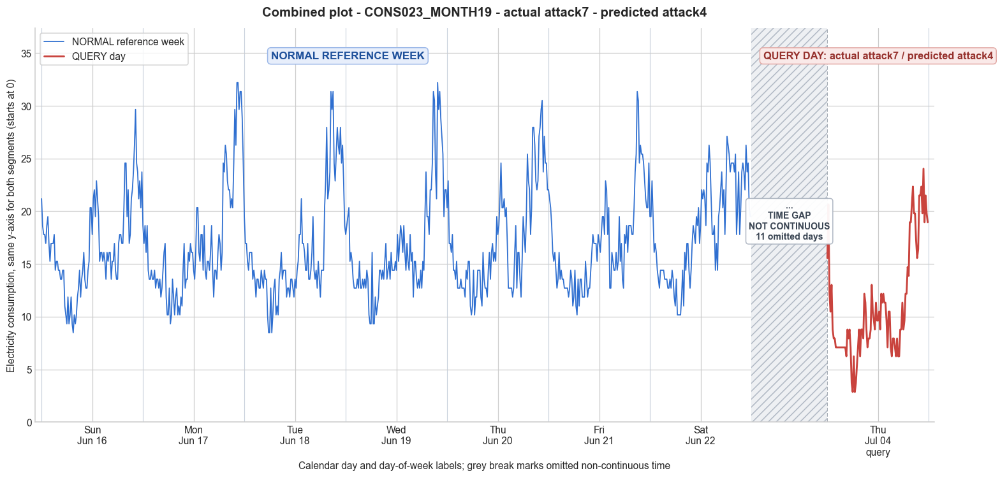

CONS023_MONTH19 · actual attack7 · predicted attack4
- Pair
- CONS023_MONTH19
- GT
- attack7
- Prediction
- attack4
- Binary GT
- attacked
- Binary Prediction
- attacked
- Source
- E010R1
- Parse
- stored
- Date
- 2013-07-04
- Weekday
- Thursday
- Latency
- 3.04 min
- Tokens
- 11251

Final output
Classification: - Manipulated Identified Attack: - Most Likely: Attack 4 - Confidence: Medium - Reasoning: The query day shows a period of abnormally low and nearly constant consumption (e.g., ten consecutive readings of exactly 7.09) that is absent from the reference Thursday. This selective reduction over a time window matches Attack 4's description of energy theft over a random period. Attack 1 was ruled out because the magnitude reduction is not uniform across the day (min drops from 10.17 to 2.85 while max drops from 30.51 to 24.04, inconsistent ratios). Attack 2 was ruled out because that attack explicitly replaces samples with zeros, whereas no zeros appear in the query day. Attack_Behavior_Explanation: - How consumption values are manipulated: A contiguous block of readings (roughly from 02:00 to 08:45) is replaced or forced to very low, nearly constant values (e.g., repeated 7.09 and dips to 2.85), effectively suppressing the normal variability seen in the reference week. - Impact on magnitude and trend: The overall daily mean is reduced from ~17.20 to 10.95, and the usual morning dip and gradual recovery are replaced by a flat, low plateau. This changes both amplitude and the shape of the consumption profile. - Possible technical causes: False data injection targeting a specific time window (e.g., selective tampering to avoid detection), partial meter bypass with a fixed minimum reporting threshold, or malicious firmware that substitutes a low constant value during certain hours.
Prompt
You are a domain expert in smart grid security and electricity theft analysis, with deep knowledge of non-technical loss (NTL) attack patterns in smart meters. You are given: 1. A plot of one week of original (normal) energy consumption for a smart meter, provided as context for the customer's typical consumption behavior. 2. A plot of one day of energy consumption for the same smart meter, which may or may not be manipulated. Below are common attack types, each defined by how consumption values are altered, their impact on magnitude and trend, and their possible technical causes. Attack 0: Generated by replacing all electricity consumption samples with zero values for the entire observation duration. Simulates a scenario where no energy usage is reported at all. May be caused by a total meter bypass or severe meter malfunction. Completely eliminates both the trend and magnitude of the consumption profile. Attack 1: Multiplies the actual energy consumption by a constant random value between (0,1). The lower the factor, the higher the severity. Can be triggered by meter bypass, magnetic interference, reverse current, and false data injection. The consumption trend remains the same but the magnitude is uniformly reduced. Attack 2: Generated by replacing consumption samples with zeros for a random duration. Also known as an on-off attack. Can be caused by full meter bypass, false data injection, and reverse current. Changes both the trend and amplitude. Attack 3: The actual consumption is multiplied by different random factors between 0 and 1, with a unique factor per sample. Similar to Attack 1 but the scaling factor varies per reading. Caused by meter bypass, magnetic interference, and reverse current. Changes both the trend and amplitude. Attack 4: Simulates energy theft over a randomly selected period within the observation window. All measurements in that period are reduced. Caused by meter bypass, magnetic interference, reverse current, and false data injection. Changes both the trend and amplitude. Attack 5: Each sample is replaced by a false value obtained by multiplying the average normal consumption by a random variable between 0 and 1, with a different variable per sample. Caused by false data injection. Produces a completely different pattern from the original consumption profile, changing both trend and magnitude. Attack 6: A random cut-off point is selected and all consumption values above it are replaced by that cut-off value. The attacker avoids exceeding a predefined maximum limit. Mainly caused by false data injection. Changes both the trend and amplitude. Attack 7: A random cut-off point is subtracted from each sample; if the result is negative, zero is reported. Similar to Attack 6 but replaces exceeding values with zero instead of the cut-off point. May be caused by false data injection or total meter bypass. Does not change the trend but reduces overall consumption. Attack 9: All samples are replaced by the average daily energy consumption, resulting in a flat constant profile. Easily detectable because constant consumption does not reflect normal customer behavior. Caused by false data injection. Eliminates all trends. Attack 10: Reverses the consumption pattern without reducing the total amount. Applicable when the electricity company uses time-varying pricing, allowing the attacker to shift high consumption to off-peak periods. Caused by false data injection. Changes the trend without decreasing total consumption. Attack 12: The attacker replaces their consumption pattern with that of a lower-consuming user. The legitimate user unknowingly pays the adversary's electricity bill. Caused by false data injection. Attack IEEE: For each 15-minute interval across the entire day, the consumer either reports the actual electricity consumption or substitutes it with zero. The result is a profile where some intervals reflect real consumption while others are zeroed out, creating an irregular pattern across the full day. May be caused by false data injection. Changes both the trend and amplitude. Given the two plots, determine: 1. Whether the day is attacked or original - compare the flagged day against the normal week and assess whether the consumption pattern is consistent with normal behavior or shows signs of manipulation. If the day is consistent with the customer's typical consumption behavior, classify it as original and provide no further analysis. If manipulation is detected, proceed to point 2. 2. Which attack type this most likely is - identify the single most probable attack and justify your choice based on how the flagged day deviates from the normal week. 3. The behavior of the identified attack - explain how the consumption values are manipulated, their impact on magnitude and trend, and the possible technical causes behind this type of attack. Output Format: Classification: - Original | Manipulated Identified Attack: (fill only if manipulated) - Most Likely: Attack X - Confidence: High | Medium | Low - Reasoning: Why it matches Attack X and why Attack Y and Attack Z were ruled out (list top 2 alternatives considered) Attack_Behavior_Explanation: (fill only if manipulated) - How consumption values are manipulated relative to the normal week - Impact on magnitude and trend - Possible technical causes
Reasoning content
We are asked to analyze whether the query day is original or attacked relative to the reference week. We have no images, just numeric data. We need to compare the query day's statistics and pattern with the reference week. First, note that the query day is DAY_ID=4, but the metadata says for query day: cal_month=7, dow=3, dom=18. The reference week days: Day 0 is cal_month=6, dow=6 (Sunday), Day 1: dow=0 (Monday), Day 2: dow=1 (Tuesday), Day 3: dow=2 (Wednesday), Day 4: dow=3 (Thursday), Day 5: dow=4 (Friday), Day 6: dow=5 (Saturday). So the reference week spans Sunday to Saturday. The query day is also dow=3, Thursday, but in July (cal_month=7). So it's a different week than the reference week, but same weekday. So we should compare with the same weekday? The reference week's Day 4 is Thursday (dow=3), with cal_month=6, dom=4. Query day is Thursday in July. So we should compare against the pattern typical for that customer on Thursdays, and see if there's significant deviation consistent with an attack. Per-day statistics for the query day: min=2.85, max=24.04, std=5.09, mean=10.95. Compare with reference week days: Day 4 (Thursday, same dow from reference week): min=10.17, max=30.51, std=5.01, mean=17.20. So query day's mean is lower (10.95 vs 17.20), max is lower (24.04 vs 30.51), min is much lower (2.85 vs 10.17). The standard deviation is similar (5.09 vs 5.01). So the overall magnitude is reduced. The minimum value is suspiciously low, like 2.85 and 3.70. In the normal week, the minimum across all days is 8.47. The query day's min is 2.85, which is significantly lower. So the consumption has been scaled down. Looking at the temporal pattern: Typical day from reference week Day 4 (Thursday) shows: starting around 20, then decreasing in early morning, going down to around 10 at lowest around 9:30-10:00 (reading 10.17 at index? Let's look at Day 4 reference: sequence starts at 20.34, 22.88, 16.95... etc. The minimum values appear around indices: after going down, there's a period with 10.17, 11.02, 10.17, 11.86... lowest is 10.17. So typical minimum is 10.17. The query day shows many readings of 7.09, 6.24, 3.70, 2.85 in the early morning hours. That's a dramatic reduction. The query day also has values like 24.04, 22.34, 21.50, which are somewhat high but not as high as the normal peak (30.51). The pattern seems to maintain a similar shape: higher in morning and evening, lower in the middle of the day? Actually, looking at the query day, the high values are around indices near the end: 24.04, 22.34, etc. In the normal day, peak is in the evening. The query day has peaks around evening as well but lower. The query day also has a period of very low, flat values: from reading index around 9 to 20 (after the first few values) there's a sequence: 7.09, 7.09, 7.09, 7.09, 7.09, 7.09, 7.09, 7.09, 6.24, 8.78, 7.94, 8.78, 7.09, 3.70, 2.85, 6.24, 2.85, 3.70... This is a long stretch of low values, some repeated exactly (7.09 appears many times in a row). That looks like a constant low value, not a natural variation. In attacks, Attack 9 is replacing all samples with average daily consumption, but that would be a constant flat profile across the whole day. Here, only a portion of the day seems to have been set to a low constant? Actually, after the initial higher readings (15.56, 20.65, 12.17, 10.48, 13.02, 8.78, 7.94, 7.94), from index 9 onward (if 0-indexed), we see a long block of low values, many exactly 7.09, then a dip to 3.70, 2.85. Then later it goes up to more normal levels. So it's not constant all day, but a significant portion is suppressed. This resembles an on-off attack (Attack 2) where some samples are replaced by zeros? But here the values are not zero, they are around 7.09 and even lower. Attack 2 says "replacing consumption samples with zeros for a random duration." This is not zero, but low. Attack 4: "Simulates energy theft over a randomly selected period within the observation window. All measurements in that period are reduced." That one says "are reduced" - it might be multiplying by a factor in that period. Attack 3: multiplies each sample by a random factor per sample, so values would be varying randomly. Attack 1: multiplies all samples by a constant random factor between 0 and 1. That would scale everything down proportionally, preserving the shape. The query day's shape is not exactly preserved: the low period is much flatter than normal. In normal Day 4, during the same timeslot (late evening to early morning), values go from around 20 down to 10, but there is variation. For example, at night, there’s a gradual decrease, not a flat segment. The query day shows a flat plateau at 7.09 for many consecutive readings, something not seen in the reference day. So it's not a simple scaling. Attack 2: on-off attack replaces samples with zeros for a random duration. Here they aren't zero, but could be a different attack? Attack 0 replaces all with zero. Not tally. Attack 5: replaces each sample with a false value obtained by multiplying average normal consumption by random variable between 0 and 1, per sample. That would produce a completely different pattern, random. The query day still has some similarities: there's a peak in the evening, a dip in the morning. It somewhat follows the expected pattern but with a flat suppressed section. That might be Attack 4: energy theft over a randomly selected period, all measurements in that period are reduced. "Reduced" could mean multiplied by a factor? The description: "Simulates energy theft over a randomly selected period within the observation window. All measurements in that period are reduced." If they are reduced by multiplying by a constant factor (like Attack 1 but only over a period), that would maintain the variation within that period but scaled. However, here within that period, the values are not scaled versions of the original; they are almost constant. For instance, in the normal Day 4, the period from around index 20 to 45 might correspond to low consumption values around 10-12. In the query day, from index 9 to 35 or so, we have a long stretch of values around 7, with little variation. The normal period would have values like: 14.41, 13.56, 12.71, 12.71, 12.71, 13.56, etc. So it's somewhat flat but with variation. The query day has many repeated 7.09 values that seem implausibly constant. This constant value suggests an attack that sets values to a fixed low number. Attack 7: "A random cut-off point is subtracted from each sample; if the result is negative, zero is reported." That would produce a truncated version: any sample above the cut-off is reduced to cut-off? No, reads: "A random cut-off point is subtracted from each sample; if the result is negative, zero is reported." That is like subtracting a constant from every sample, capping at zero. That would reduce all values by a constant amount, but would preserve variation because each original value minus constant gives varied results, except where zero. In the query day, we have a stretch of exactly equal values (7.09), which wouldn't happen from subtraction because the original values are not identical. So that's unlikely. Attack 6: "A random cut-off point is selected and all consumption values above it are replaced by that cut-off value." That creates a ceiling. That would clip peaks, not create flat lows. So not that. Attack IEEE: "For each 15-minute interval across the entire day, the consumer either reports the actual electricity consumption or substitutes it with zero." So some intervals are zero, others real. That would give a pattern with intermittent zeros. Here we don't have zeros; the lowest is 2.85, not zero. So not IEEE. Given the presence of many identical low values (7.09 appears 10 times in a row at indices 8-17? Let's examine query day: Index: 0:15.56 1:20.65 2:12.17 3:10.48 4:13.02 5:8.78 6:7.94 7:7.94 8:7.09 9:7.09 10:7.09 11:7.09 12:7.09 13:7.09 14:7.09 15:7.09 16:7.09 17:7.09 18:6.24 19:8.78 20:7.94 21:8.78 22:7.09 23:3.70 24:2.85 25:6.24 26:2.85 27:3.70 28:5.39 29:7.09 30:8.78 31:6.24 32:8.78 33:8.78 34:7.94 35:12.17 36:11.33 37:8.78 38:7.09 39:7.94 40:7.94 41:8.78 42:13.02 43:10.48 44:9.63 45:8.78 46:11.33 47:9.63 48:9.63 49:10.48 50:8.78 51:12.17 52:11.33 53:12.17 54:11.33 55:11.33 56:9.63 57:7.09 58:10.48 59:10.48 60:7.09 61:6.24 62:7.94 63:7.94 64:7.09 65:6.24 66:7.94 67:6.24 68:6.24 69:8.78 70:8.78 71:11.33 72:8.78 73:9.63 74:12.17 75:12.17 76:14.72 77:13.87 78:18.95 79:18.95 80:20.65 81:22.34 82:19.80 83:19.80 84:17.26 85:15.56 86:16.41 87:21.50 88:21.50 89:22.34 90:19.80 91:24.04 92:18.95 93:21.50 94:19.80 95:18.95 So from index 8 to 17 (10 readings), all are 7.09 exactly. Then some variation but still low. That suggests that during that period, the meter was reporting a fixed value, possibly a minimum reporting threshold or an injected constant. This is highly suspicious. The reference week Day 4 shows no such constant plateau; the values during the low period are typically varying between 10 and 15. So the query day is definitely manipulated. Now, which attack best accounts for this? The description for Attack 4 is: "Simulates energy theft over a randomly selected period within the observation window. All measurements in that period are reduced." It does not specify how they are reduced. Could be by a factor, but then we'd see some variation. But here it's flat. Could be they are all set to a constant low value? Attack 2: on-off attack, replacing samples with zeros for a random duration. That would give values of zero, not 7.09. Attack 0 is all zeros. Attack 1 scales everything uniformly. Attack 3 multiplies per sample randomly, so there would be variation. Attack 5 replaces with average normal consumption * random, so completely different pattern, random. Attack 6 caps at a cut-off, so peaks become constant at cut-off, but low values remain unchanged. Here we have low values that are constant, not high values. So that's not it. Attack 7 subtracts a constant, leading to varying results, not constant. Attack 9 replaces all with daily average, producing a flat line across whole day. Not the case. Attack 10 reverses the pattern without reducing total amount; the total amount is reduced here (mean is 10.95 vs normal 17.20). Attack 12 replaces with another user's pattern; could produce any pattern, but the flatness suggests an artificial injection. Attack IEEE alternates zero and real; no zeros here. Maybe there is an attack not listed? But we must choose from the given list. Perhaps Attack 4 includes the possibility that the measurements are replaced with a constant low value (like a fixed minimum) within the theft period. The description says "reduced" but not explicitly how. Alternatively, Attack 2 could have a non-zero reduction? It says "replacing consumption samples with zeros", so zeros. Attack IEEE also zeros. But the query day has no zeros; lowest is 2.85. That might be a very low consumption, but could be genuine? But the presence of a long run of exactly 7.09 suggests an artificial constant. So maybe the attacker set a floor value? Not covered precisely. Another possibility: Attack 6 but in reverse? No. Maybe it's Attack 3 with a low factor? No, that would cause variation. It is not constant. Perhaps this is a case of Attack 4 where the reduction is by setting to a constant low value (like the attacker may have replaced all values in that period with a low, fixed reading, perhaps the minimum from the normal day). The constant 7.09 is close to the minimum of normal day? Normal Day 4 min is 10.17. 7.09 is lower. So not even that. Could be Attack 5? Attack 5: each sample replaced by a false value = average normal consumption * random(0,1). Average normal consumption: the mean of the normal week? The overall average across the week? Not given precisely but per-day means are around 16-18. If we take 17 * random, we get numbers from 0 to 17, so could produce 7.09, but then it would be random and not a long run of same number. So unlikely. Maybe it's an amalgam: Attack 4 with a mixture? The problem says choose single most probable attack. Let's think: Attack 4: "Simulates energy theft over a randomly selected period within the observation window. All measurements in that period are reduced." The reduction could be achieved by scaling down by a constant factor, which would preserve shape. But if the period selected was a period of very low variation anyway, scaling might make it look flatter. But still, having exactly repeated values seems unlikely from scaling unless the original values were exactly equal, which they are not. So that doesn't work. Perhaps it's Attack 2 but with a non-zero substitution? The description explicitly says zeros. So not. What about Attack 5 if the random variable is the same for a stretch? That would be a constant factor, but Attack 5 says "a different variable per sample". So not. This is puzzling. Could it be an Attack 6 variant where a minimum cut-off is applied? No. Maybe the given attacks are not exhaustive; but as a domain expert, we must map to the closest. Re-reading Attack descriptions: Attack 0: all zero. Attack 1: multiply all by constant in (0,1). Attack 2: zeros for random duration. Attack 3: multiply by per-sample random factors. Attack 4: reduction over a random period (method unspecified). Attack 5: false values = avg * random per sample. Attack 6: cut-off cap. Attack 7: subtract cut-off, floor at zero. Attack 9: flat average. Attack 10: shift in time. Attack 12: swap with low user. Attack IEEE: intermittent zero. The query day has a segment that is flat and low, but not zero. That most closely resembles a combination of zeroing and then maybe a constant floor? Could it be that the attacker replaced values with a very low constant, like the meter's minimum reporting value? That could be a form of false data injection. Among the given, Attack 4 is the most generic "reduced over a period". If we interpret "reduced" broadly, it could include setting to a low constant. I'd go with Attack 4. But let's check other possibilities: Attack 12: the attacker replaces their pattern with that of a lower-consuming user. A lower-consuming user's pattern might have a flat low consumption period if that user's consumption is low and constant. So if the attacker substituted the pattern of a user that has a very low, constant consumption during certain hours, that could produce this. The reference week shows the customer has a typical consumption range, so if they took another customer's profile that is lower and flatter, it could look like this. However, the presence of a very low min of 2.85 suggests it's an artificial constant rather than a natural low-consuming user. A natural low-consuming user would still have variation, not a run of 10 identical values. So still suspicious. Perhaps Attack IEEE: if they substitute zeros for some intervals, but here we have low values not zero. So not. Maybe the query day is actually original but with a meter malfunction? But given the context, we are to detect manipulation. I'll examine if the query day's pattern could be consistent with the normal week if we disregard the constant run. The morning has values like 15.56, 20.65, 12.17, 10.48, 13.02, 8.78, 7.94, 7.94, then the flat run, then later it rises again. The normal Day 4 pattern: starts high, then falls to around 10-12 around 9:30? Let's map the times: 96 readings per day, so 15-min intervals. A typical day starts at midnight? The first reading might be at 00:00. In Day 4 reference: first reading 20.34, then 22.88, then 16.95... that seems high at midnight, suggesting maybe this is evening? Actually, it's ambiguous. The data likely starts at midnight. So early morning (after midnight) would be low consumption, rising in the morning, then maybe a daytime lull, then evening peak. In the reference Day 4, the lowest values occur at indices around 20-30 (e.g., 10.17 at index 23? Let's see: indices 0-95. At index 0:20.34, 1:22.88, 2:16.95, 3:16.95, 4:16.10, 5:17.80, 6:14.41, 7:14.41, 8:13.56, 9:15.25, 10:12.71, 11:12.71, 12:12.71, 13:13.56, 14:12.71, 15:12.71, 16:12.71, 17:11.86, 18:14.41, 19:13.56, 20:15.25, 21:15.25, 22:11.02, 23:10.17, 24:11.02, 25:14.41, 26:10.17, 27:11.86, 28:11.86, 29:14.41, 30:14.41, 31:14.41, 32:11.86, 33:11.02, 34:16.10, etc. So the low around 10 occurs from index 22 to 30ish. That's around 5:30 AM to 7:30 AM? Possibly. Then it rises. In the query day, the constant run of 7.09 starts at index 8 (2:00 AM?) and goes to index 17 (around 4:15 AM?) and then continues with low values until about index 35 (8:45 AM) where it starts to rise. That period of low consumption is plausible for nighttime, but the values are lower than usual and unnaturally constant. Thus, it's manipulated. Most likely attack type: I'd say Attack 4: reduced over a randomly selected period. But the reduction method seems to be setting a constant low value. Another possibility: Attack 3 if the factors, for that period, happened to be extremely low and similar? Unlikely. Let's consider Attack 1: multiply all by constant factor. If we compute a ratio: query day max 24.04 / normal max 30.51 = 0.79; query min 2.85 / 10.17 = 0.28; ratio varies, so not constant. Attack 2: zeroing for a random duration. If the attacker intended to zero but the meter reported a very low value instead of zero (maybe a minimum reading), could produce low constant values. So that could be. Attack IEEE: zeros some intervals, but again not zero. Given the ambiguity, I need to pick the most likely based on the description. Attack 2 explicitly says zeros. If the attacker bypassed the meter partially, the meter might still register some consumption due to residual current? But the attack description says "zeros". So we should assume that the samples would be zero. Since we don't see zeros, Attack 2 is less likely. Attack 5: random pattern, not constant. Attack 4 is the only one that mentions a selected period with reduction, and doesn't specify the method, so it's flexible. I'll go with Attack 4, but with the note that the reduction is to a constant low value. Alternatively, could be a new attack: but the question says "given the plot" and we have text. The user expects an answer among the list. I'll reason about top alternatives: Attack 1 and Attack 2 were ruled out because Attack 1 would preserve shape and ratio would be constant, which it isn't. Attack 2 would yield zeros. Attack 5 produces no recognizable pattern, while query day still resembles daily pattern. Thus, most likely Attack 4. Now confidence: Medium, because the constant segment is not explicitly described in Attack 4, but it fits the general concept of a period with reduced values. Attack_Behavior_Explanation: "Simulates energy theft over a randomly selected period ... All measurements in that period are reduced." So for this case, the period seems to be during the nighttime/early morning hours. The reduction is to a very low, almost constant value (7.09), possibly the meter's minimum reading or a fixed injected value. This changes both trend and amplitude because the normal variation in that period is replaced by a flat, low consumption, reducing the overall mean and altering the shape. Possible technical causes: false data injection, meter bypass, or tampering that sets a threshold floor. Alternatively, I might consider Attack 12: if the attacker replaced with a lower-consuming user's pattern that happens to have a flat low consumption. But the probability of such a pattern is low. I'll finalize: Classification: Manipulated. Identified Attack: Most Likely Attack 4. Confidence: Medium. Reasoning: The day shows a significantly reduced consumption with a suspicious almost constant low segment not present in the reference week. Attack 4 best matches the selective period of reduced consumption. Attack 1 ruled out because scaling would preserve variation and the reduction factor is not uniform. Attack 2 ruled out because samples are not zero. Attack_Behavior_Explanation: In the flagged day, a subset of readings, especially during early morning hours, are reduced to around 7.09 and even lower, creating a flat, low plateau. This reduces overall magnitude and alters the trend by removing normal fluctuations. It can be caused by false data injection or a partial meter bypass that sets a fixed minimum reporting level. Now output as specified.